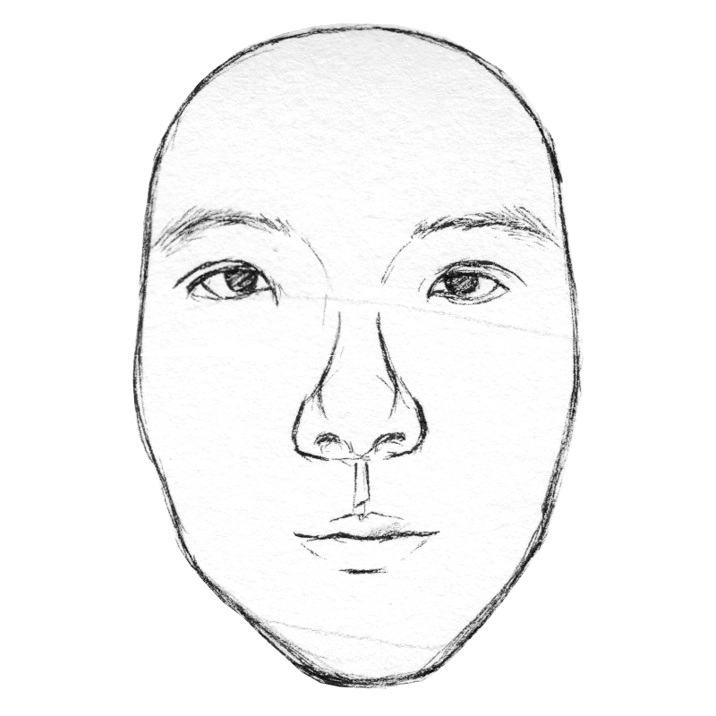
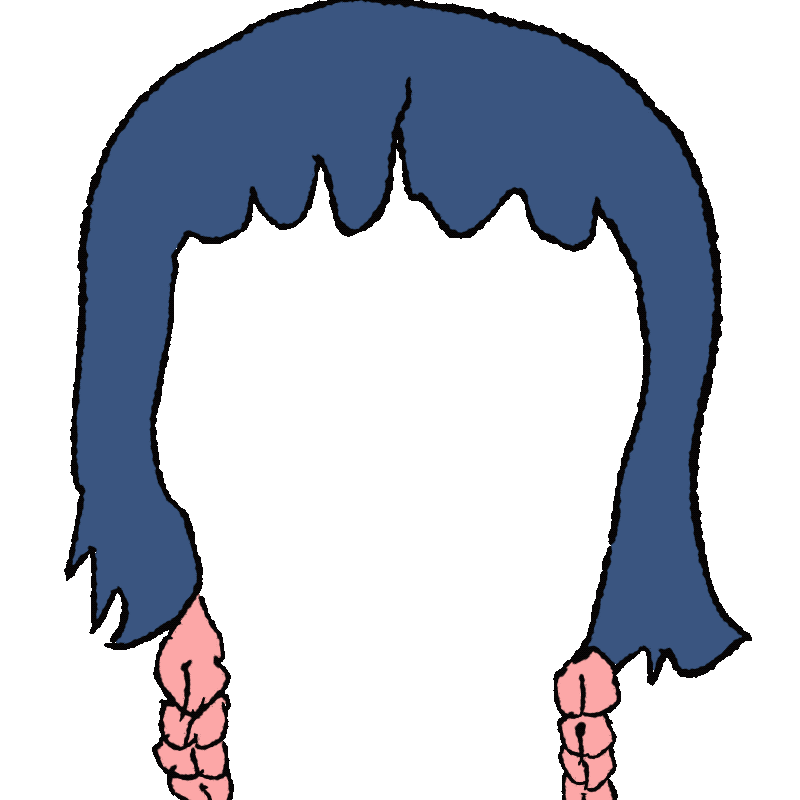

About
My name is June, I create interactive art and narrative games about memory, mental health, liminal spaces, and gender identity.
Interactive art · games · moving image
My name is June, I create interactive art and narrative games about memory, mental health, liminal spaces, and gender identity.
Role: designer / creator / programmer / artist
An interactive pop-up folio installation combining hand-drawn paper engineering and responsive digital motion to explore abandoned dreamlands and emotional safe spaces.
Role: game designer / programmer / background artist / narrative designer
A narrative pixel mystery following a student searching for a missing classmate, uncovering pressures and romanticized harassment in school life.

Role: director / story designer / visual designer / editor
A 3:10 experimental short film exploring identity and self-presentation without ever showing the protagonist’s face.

You can reach me at junejingyingshi@gmail.com.